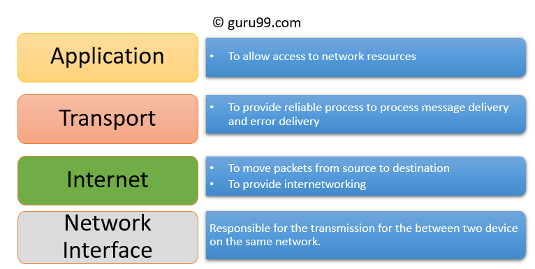
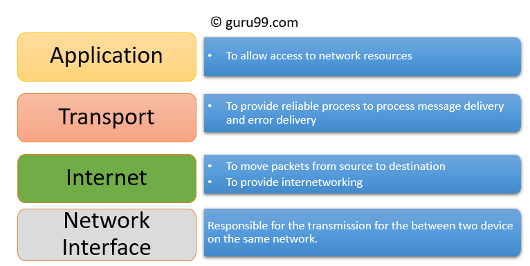

Application layer of TCP/IP
TCP/IP has a layer that is an Application layer. The Application layer is for node-to-node communication, and controls user interface specifications. this layer in the TCP/IP represents the Application layer Presentation layer the Session layer in the OSI, so basically this one layer in the TCP/IP represents 3 layers in the OSI.
Some important things in the Application layer are
HTTP: stands for Hypertext transfer protocol and it manages communications between web browsers and servers.
HTTPS: stands for hypertext transfer protocol secure. it combines HTTP with SSL so that they can easily fill out forms, sign in, authenticate and carry out bank transactions.
SHH: stands for Secure shell. it maintains an encrypted connection, setting up a secure session over the TCP/IP connection
NTP: stands for Network Time Protocol it uses to synchronize the clocks on our computer to standard time courses. It also helps with bank transactions because if your computer says the time is 3:30 but the real-time in 3:31 once you send that transaction the servers can crash that's why NTP matter so that all servers have the same time system
Images
 

Works Cited
Source Website TCP96/IP Source Website OSI